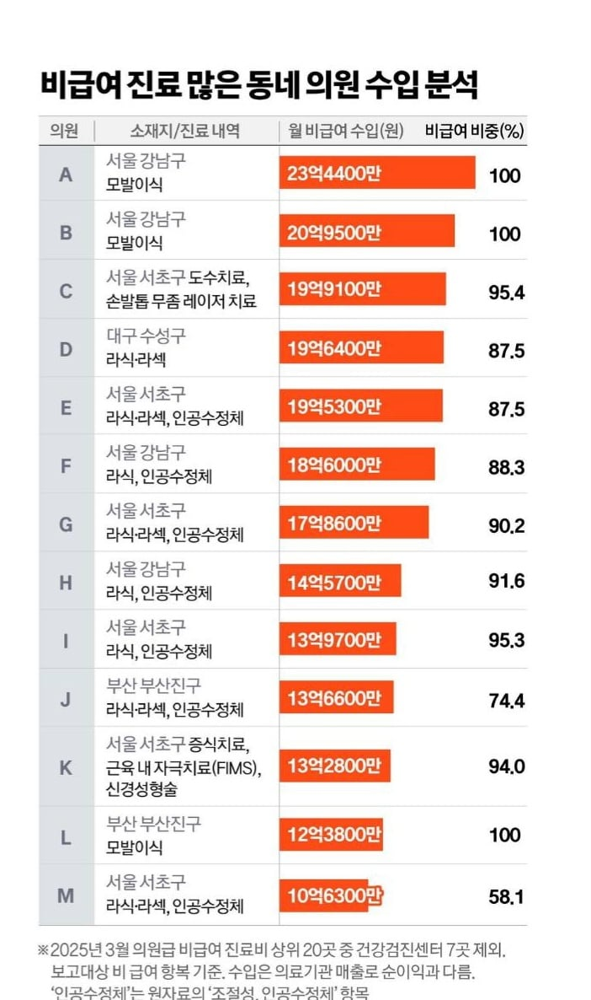

병원급 제외.
1등 월 23억원

병원급 제외.
1등 월 23억원
위고비 마운자로까제 나타나서 점점 더 많이 몰리는중
1분도 안되는 동안 진료비 만원 딸깍딸깍임
탈모는 정수리 사진이라도 찍지 ㅋㅋ
한번 진료받고나면 걍 처방전뽑아주는기계임 ㄹㅇ 갈때마다 약받으러왔는데요 하면 의사얼굴도못보고 처방전들고나가게됨
머머리들 돈 많이쓰는구나
재료비 인건비 기기임대료 방값 하면 얼마남을라나
순이익이 궁금하네
월매출 xx억!! ㅇㅈㄹ은 동네 국밥집도 할수있는거러
종로3가역 안에 있는 째깐한 병원 있는데
주말에 사람들이 버글버글함
정작 위고비 성지 약국에서 가까운
종로5가 병원은 조용해서
요즘은 종로5가에서 한방에 해결함
팔팔약국?
보배인가 보람인가? 탈모 장기반 처방때문임
신경도 성형햐?
저 정도면 한 병원에 의사 5-6명은 있을 듯
병원보다 작은건 의원이라고 하는구나 첨알았네
보통 입원병상 30개 기준
의외로 그럴만한 업종이 올라와있네 ㅋㅋ
부산 라식라섹이면 서면에 거긴가 보네
무좀치료 비급여야??
지방사람인데 내친구 2명도 압구정가서 머리심고옴ㅋㅋ
저정도면 머리심는 공장이넹
모발이식 하는거 보니까 ㄹㅇ 걍 노가다더만 ㅋㅋ 비싸도 이해해야할듯
라식, 라섹이 의료보험 안되는거였어?
보통 건강에 직접 영향 아닌건 전부 비급여일걸?
그렇긴 한데... 처음 안 사실이라 좀 놀람
저거 강남에 모발이식 3대장이 움찬,모제림,다나
1000모 심으면 대략 엄지손가락 한마디만하다보면됨. 1000모에 150-250만원. 옵션따라 다름
M자 커버치는게 2-3000모로 치면되고 모발이식 할까? 싶을 정도로 빠진 사람들은 5000모부터 시작이라서 돈천만원 잡고 시작해야해
메모메모
라식라섹이 돈이 엄청나구나 어쩐지
대머리들 공짜 좋아한다더만 아니네
모발이식한 애 얘기 들어보니 그 가격 줄 만 하다더라.
대머리들 생각보다 많구나
라식라섹 비급여구나
모발이식계의 TOP 1, 2 구나